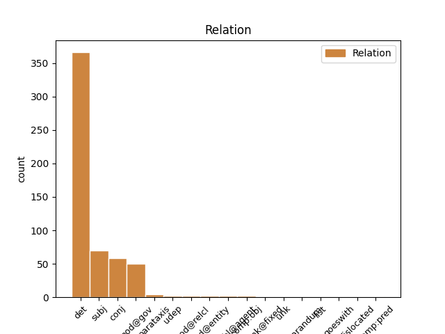
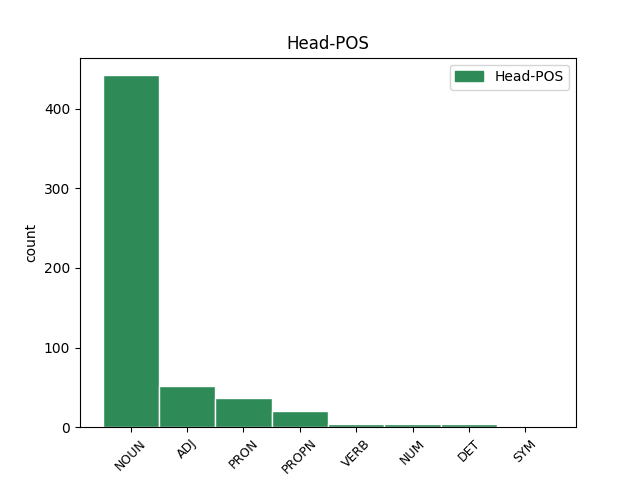
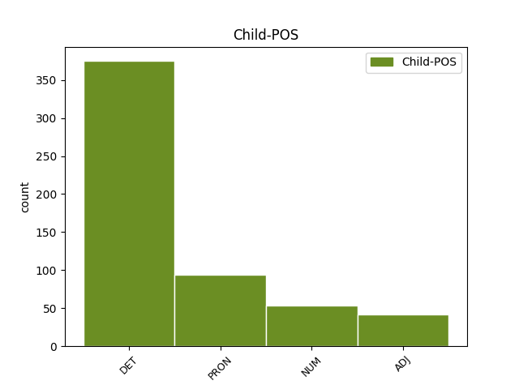

Distribution of features within this leaf



Agreement Rules sorted by frequency.
- When the dependent token is the determiner(det) of the head token, and the dependent token is DET.
1 И _ _ _ _ 0 _ _ _
2 так _ _ _ _ 0 _ _ _
3 и _ _ _ _ 0 _ _ _
4 играли _ _ _ _ 0 _ _ _
5 развеселые _ _ _ _ 0 _ _ _
6 каверы _ _ _ _ 0 _ _ _
7 на _ _ _ _ 0 _ _ _
8 Billy _ _ _ _ 0 _ _ _
9 Jean _ _ _ _ 0 _ _ _
10 и _ _ _ _ 0 _ _ _
11 Джо _ _ _ _ 0 _ _ _
12 Дассена _ _ _ _ 0 _ _ _
13 до _ _ _ _ 0 _ _ _
14 часу _ _ _ _ 0 _ _ _
15 ночи _ _ _ _ 0 _ _ _
16 ( _ _ _ _ 0 _ _ _
17 начав _ _ _ _ 0 _ _ _
18 в _ _ _ _ 0 _ _ _
19 10 _ _ _ _ 0 _ _ _
20 , _ _ _ _ 0 _ _ _
21 из _ _ _ _ 0 _ _ _
22 чего _ _ _ _ 0 _ _ _
23 сделаны _ _ _ _ 0 _ _ _
24 эти этот DET _ Case=Nom|Number=Plur 25 det _ _
25 мальчики мальчик NOUN _ Animacy=Anim|Case=Nom|Gender=Masc|Number=Plur 0 _ _ _
26 ?! _ _ _ _ 0 _ _ _
27 ) _ _ _ _ 0 _ _ _
28 . _ _ _ _ 0 _ _ _
1 Но _ _ _ _ 0 _ _ _
2 это это PRON _ Animacy=Inan|Case=Nom|Gender=Neut|Number=Sing 4 subj _ _
3 все _ _ _ _ 0 _ _ _
4 заслуги заслуга NOUN _ Animacy=Inan|Case=Nom|Gender=Fem|Number=Plur 0 _ _ _
5 Сашины _ _ _ _ 0 _ _ _
6 , _ _ _ _ 0 _ _ _
7 разумеется _ _ _ _ 0 _ _ _
8 . _ _ _ _ 0 _ _ _
1 Французы _ _ _ _ 0 _ _ _
2 , _ _ _ _ 0 _ _ _
3 которые _ _ _ _ 0 _ _ _
4 были _ _ _ _ 0 _ _ _
5 у _ _ _ _ 0 _ _ _
6 Саши _ _ _ _ 0 _ _ _
7 на _ _ _ _ 0 _ _ _
8 радио _ _ _ _ 0 _ _ _
9 за _ _ _ _ 0 _ _ _
10 день _ _ _ _ 0 _ _ _
11 до _ _ _ _ 0 _ _ _
12 , _ _ _ _ 0 _ _ _
13 скачут _ _ _ _ 0 _ _ _
14 козлами _ _ _ _ 0 _ _ _
15 по _ _ _ _ 0 _ _ _
16 сцене _ _ _ _ 0 _ _ _
17 , _ _ _ _ 0 _ _ _
18 машут _ _ _ _ 0 _ _ _
19 седыми _ _ _ _ 0 _ _ _
20 дредами _ _ _ _ 0 _ _ _
21 - _ _ _ _ 0 _ _ _
22 не _ _ _ _ 0 _ _ _
23 юные юный ADJ _ Case=Nom|Degree=Pos|Number=Plur 0 _ _ _
24 , _ _ _ _ 0 _ _ _
25 но _ _ _ _ 0 _ _ _
26 до _ _ _ _ 0 _ _ _
27 чего _ _ _ _ 0 _ _ _
28 же _ _ _ _ 0 _ _ _
29 бодрые бодрый ADJ _ Case=Nom|Degree=Pos|Number=Plur 23 conj _ SpaceAfter=No
30 ! _ _ _ _ 0 _ _ _
1 А _ _ _ _ 0 _ _ _
2 вы вы PRON PRON Case=Nom|Number=Plur|Person=2 0 _ _ _
3 , _ _ _ _ 0 _ _ _
4 о _ _ _ _ 0 _ _ _
5 гении _ _ _ _ 0 _ _ _
6 , _ _ _ _ 0 _ _ _
7 лишенные _ _ _ _ 0 _ _ _
8 приюта _ _ _ _ 0 _ _ _
9 , _ _ _ _ 0 _ _ _
10 Вы вы PRON PRON Case=Nom|Number=Plur|Person=2 2 conj _ SpaceAfter=No
11 , _ _ _ _ 0 _ _ _
12 Бейрон _ _ _ _ 0 _ _ _
13 , _ _ _ _ 0 _ _ _
14 Дант _ _ _ _ 0 _ _ _
15 и _ _ _ _ 0 _ _ _
16 Тасс _ _ _ _ 0 _ _ _
17 , _ _ _ _ 0 _ _ _
18 герои _ _ _ _ 0 _ _ _
19 без _ _ _ _ 0 _ _ _
20 войны _ _ _ _ 0 _ _ _
21 , _ _ _ _ 0 _ _ _
22 Для _ _ _ _ 0 _ _ _
23 вас _ _ _ _ 0 _ _ _
24 не _ _ _ _ 0 _ _ _
25 создана _ _ _ _ 0 _ _ _
26 в _ _ _ _ 0 _ _ _
27 теперешнем _ _ _ _ 0 _ _ _
28 минута _ _ _ _ 0 _ _ _
29 , _ _ _ _ 0 _ _ _
30 Но _ _ _ _ 0 _ _ _
31 веки _ _ _ _ 0 _ _ _
32 в _ _ _ _ 0 _ _ _
33 будущем _ _ _ _ 0 _ _ _
34 даны _ _ _ _ 0 _ _ _
35 . _ _ _ _ 0 _ _ _
1 оба оба NUM NUM Case=Nom|Gender=Masc 3 mod@gov _ _
2 были _ _ _ _ 0 _ _ _
3 мы мы PRON PRON Case=Nom|Number=Plur|Person=1 0 _ _ _
4 тут _ _ _ _ 0 _ _ _
5 . _ _ _ _ 0 _ _ _
1 Хорошие хороший ADJ _ Case=Nom|Degree=Pos|Number=Plur 0 _ _ _
2 , _ _ _ _ 0 _ _ _
3 в _ _ _ _ 0 _ _ _
4 принципе _ _ _ _ 0 _ _ _
5 , _ _ _ _ 0 _ _ _
6 такие такой DET _ Case=Nom|Number=Plur 1 conj _ _
7 же _ _ _ _ 0 _ _ _
8 , _ _ _ _ 0 _ _ _
9 как _ _ _ _ 0 _ _ _
10 и _ _ _ _ 0 _ _ _
11 в _ _ _ _ 0 _ _ _
12 Буэнос-Айресе _ _ _ _ 0 _ _ _
13 . _ _ _ _ 0 _ _ _
1 10 _ _ _ _ 0 _ _ _
2 . _ _ _ _ 0 _ _ _
3 Ах _ _ _ _ 0 _ _ _
4 , _ _ _ _ 0 _ _ _
5 да _ _ _ _ 0 _ _ _
6 ... _ _ _ _ 0 _ _ _
7 Есть _ _ _ _ 0 _ _ _
8 такой _ _ _ _ 0 _ _ _
9 экземпляр _ _ _ _ 0 _ _ _
10 , _ _ _ _ 0 _ _ _
11 как _ _ _ _ 0 _ _ _
12 чёткая _ _ _ _ 0 _ _ _
13 - _ _ _ _ 0 _ _ _
14 баба _ _ _ _ 0 _ _ _
15 , _ _ _ _ 0 _ _ _
16 сама самый ADJ _ Case=Nom|Degree=Pos|Gender=Fem|Number=Sing 17 subj _ _
17 красивая красивый ADJ _ Case=Nom|Degree=Pos|Gender=Fem|Number=Sing 0 _ _ _
18 , _ _ _ _ 0 _ _ _
19 ребёнок _ _ _ _ 0 _ _ _
20 красивый _ _ _ _ 0 _ _ _
21 , _ _ _ _ 0 _ _ _
22 сидит _ _ _ _ 0 _ _ _
23 у _ _ _ _ 0 _ _ _
24 мамы _ _ _ _ 0 _ _ _
25 на _ _ _ _ 0 _ _ _
26 коленях _ _ _ _ 0 _ _ _
27 , _ _ _ _ 0 _ _ _
28 не _ _ _ _ 0 _ _ _
29 рыпается _ _ _ _ 0 _ _ _
30 , _ _ _ _ 0 _ _ _
31 она _ _ _ _ 0 _ _ _
32 ему _ _ _ _ 0 _ _ _
33 тихо _ _ _ _ 0 _ _ _
34 голову _ _ _ _ 0 _ _ _
35 гладит _ _ _ _ 0 _ _ _
36 , _ _ _ _ 0 _ _ _
37 вот _ _ _ _ 0 _ _ _
38 и _ _ _ _ 0 _ _ _
39 очередь _ _ _ _ 0 _ _ _
40 их _ _ _ _ 0 _ _ _
41 быстро _ _ _ _ 0 _ _ _
42 подошла _ _ _ _ 0 _ _ _
43 , _ _ _ _ 0 _ _ _
44 и _ _ _ _ 0 _ _ _
45 они _ _ _ _ 0 _ _ _
46 довольные _ _ _ _ 0 _ _ _
47 выходят _ _ _ _ 0 _ _ _
48 из _ _ _ _ 0 _ _ _
49 кабинета _ _ _ _ 0 _ _ _
50 , _ _ _ _ 0 _ _ _
51 и _ _ _ _ 0 _ _ _
52 она _ _ _ _ 0 _ _ _
53 такая _ _ _ _ 0 _ _ _
54 : _ _ _ _ 0 _ _ _
55 - _ _ _ _ 0 _ _ _
56 Роберт _ _ _ _ 0 _ _ _
57 , _ _ _ _ 0 _ _ _
58 а _ _ _ _ 0 _ _ _
59 пошли _ _ _ _ 0 _ _ _
60 в _ _ _ _ 0 _ _ _
61 парк _ _ _ _ 0 _ _ _
62 , _ _ _ _ 0 _ _ _
63 я _ _ _ _ 0 _ _ _
64 тебе _ _ _ _ 0 _ _ _
65 мороженку _ _ _ _ 0 _ _ _
66 куплю _ _ _ _ 0 _ _ _
67 . _ _ _ _ 0 _ _ _
1 Увы _ _ _ _ 0 _ _ _
2 , _ _ _ _ 0 _ _ _
3 не _ _ _ _ 0 _ _ _
4 понимаю _ _ _ _ 0 _ _ _
5 ... _ _ _ _ 0 _ _ _
6 Где _ _ _ _ 0 _ _ _
7 эта _ _ _ _ 0 _ _ _
8 жизнь жизнь NOUN _ Animacy=Inan|Case=Nom|Gender=Fem|Number=Sing 0 _ _ _
9 , _ _ _ _ 0 _ _ _
10 которая _ _ _ _ 0 _ _ _
11 моя мой DET _ Case=Nom|Gender=Fem|Number=Sing 8 mod@relcl _ SpaceAfter=No
12 . _ _ _ _ 0 _ _ _
1 Он он PRON _ Case=Nom|Gender=Masc|Number=Sing|Person=3 0 _ _ _
2 , _ _ _ _ 0 _ _ _
3 бедный бедный ADJ _ Case=Nom|Degree=Pos|Gender=Masc|Number=Sing 1 parataxis _ SpaceAfter=No
4 , _ _ _ _ 0 _ _ _
5 грезит _ _ _ _ 0 _ _ _
6 о _ _ _ _ 0 _ _ _
7 покое _ _ _ _ 0 _ _ _
8 . _ _ _ _ 0 _ _ _
1 Я _ _ _ _ 0 _ _ _
2 богат _ _ _ _ 0 _ _ _
3 , _ _ _ _ 0 _ _ _
4 как _ _ _ _ 0 _ _ _
5 набоб _ _ _ _ 0 _ _ _
6 , _ _ _ _ 0 _ _ _
7 солнцем _ _ _ _ 0 _ _ _
8 залитых _ _ _ _ 0 _ _ _
9 , _ _ _ _ 0 _ _ _
10 Гомонящих _ _ _ _ 0 _ _ _
11 монет _ _ _ _ 0 _ _ _
12 я _ _ _ _ 0 _ _ _
13 не _ _ _ _ 0 _ _ _
14 берегу _ _ _ _ 0 _ _ _
15 , _ _ _ _ 0 _ _ _
16 При _ _ _ _ 0 _ _ _
17 себе _ _ _ _ 0 _ _ _
18 у _ _ _ _ 0 _ _ _
19 меня _ _ _ _ 0 _ _ _
20 столько столько NUM _ Case=Nom 0 _ _ _
21 золотых _ _ _ _ 0 _ _ _
22 , _ _ _ _ 0 _ _ _
23 Сколько сколько NUM _ Case=Nom 20 mod@relcl _ _
24 гальки _ _ _ _ 0 _ _ _
25 речной _ _ _ _ 0 _ _ _
26 здесь _ _ _ _ 0 _ _ _
27 , _ _ _ _ 0 _ _ _
28 на _ _ _ _ 0 _ _ _
29 берегу _ _ _ _ 0 _ _ _
30 ! _ _ _ _ 0 _ _ _
1 некую некий DET _ Case=Acc|Gender=Fem|Number=Sing 4 unk _ _
2 " _ _ _ _ 0 _ _ _
3 гражданскую _ _ _ _ 0 _ _ _
4 силу сила NOUN _ Animacy=Inan|Case=Acc|Gender=Fem|Number=Sing 0 _ _ _
5 " _ _ _ _ 0 _ _ _
6 раньше _ _ _ _ 0 _ _ _
7 на _ _ _ _ 0 _ _ _
8 всех _ _ _ _ 0 _ _ _
9 дебатах _ _ _ _ 0 _ _ _
10 представлял _ _ _ _ 0 _ _ _
11 хач _ _ _ _ 0 _ _ _
12 . _ _ _ _ 0 _ _ _
1 с _ _ _ _ 0 _ _ _
2 помощью _ _ _ _ 0 _ _ _
3 @YouTube _ _ _ _ 0 _ _ _
4 Мальцев _ _ _ _ 0 _ _ _
5 , _ _ _ _ 0 _ _ _
6 по _ _ _ _ 0 _ _ _
7 списку _ _ _ _ 0 _ _ _
8 " _ _ _ _ 0 _ _ _
9 ПАРНАС _ _ _ _ 0 _ _ _
10 " _ _ _ _ 0 _ _ _
11 , _ _ _ _ 0 _ _ _
12 номер номер NOUN _ Animacy=Inan|Case=Nom|Gender=Masc|Number=Sing 0 _ _ _
13 восемь восемь NUM _ Case=Nom 12 mod@entity _ SpaceAfter=No
14 ! _ _ _ _ 0 _ _ _
1 Вячеслав _ _ _ _ 0 _ _ _
2 Мальцев _ _ _ _ 0 _ _ _
3 ответит _ _ _ _ 0 _ _ _
4 вам _ _ _ _ 0 _ _ _
5 на _ _ _ _ 0 _ _ _
6 все _ _ _ _ 0 _ _ _
7 интересующие интересовать VERB _ Animacy=Inan|Aspect=Imp|Case=Acc|Number=Plur|Tense=Pres|VerbForm=Part|Voice=Act 0 _ _ _
8 вас вы PRON _ Case=Acc|Number=Plur|Person=2 7 comp:obj _ _
9 вопросы _ _ _ _ 0 _ _ _
10 ! _ _ _ _ 0 _ _ _
1 Администрация администрация NOUN _ Animacy=Inan|Case=Nom|Gender=Fem|Number=Sing 0 _ _ _
2 Президента _ _ _ _ 0 _ _ _
3 : _ _ _ _ 0 _ _ _
4 " _ _ _ _ 0 _ _ _
5 Ой _ _ _ _ 0 _ _ _
6 , _ _ _ _ 0 _ _ _
7 всё всё PRON _ Animacy=Inan|Case=Nom|Gender=Neut|Number=Sing 1 parataxis _ SpaceAfter=No
8 ! _ _ _ _ 0 _ _ _
9 " _ _ _ _ 0 _ _ _
1 И _ _ _ _ 0 _ _ _
2 что _ _ _ _ 0 _ _ _
3 Проститутка _ _ _ _ 0 _ _ _
4 , _ _ _ _ 0 _ _ _
5 Кладун _ _ _ _ 0 _ _ _
6 , _ _ _ _ 0 _ _ _
7 это это PRON _ Animacy=Inan|Case=Nom|Gender=Neut|Number=Sing 0 _ _ _
8 та тот DET _ Case=Nom|Gender=Fem|Number=Sing 7 comp:pred _ _
9 что _ _ _ _ 0 _ _ _
10 за _ _ _ _ 0 _ _ _
11 деньги _ _ _ _ 0 _ _ _
12 , _ _ _ _ 0 _ _ _
13 а _ _ _ _ 0 _ _ _
14 не _ _ _ _ 0 _ _ _
15 за _ _ _ _ 0 _ _ _
16 знаки _ _ _ _ 0 _ _ _
17 внимания _ _ _ _ 0 _ _ _
18 . _ _ _ _ 0 _ _ _
19 ) _ _ _ _ 0 _ _ _
1 Эта _ _ _ _ 0 _ _ _
2 концовка _ _ _ _ 0 _ _ _
3 НИКАК _ _ _ _ 0 _ _ _
4 не _ _ _ _ 0 _ _ _
5 была _ _ _ _ 0 _ _ _
6 увязана _ _ _ _ 0 _ _ _
7 с _ _ _ _ 0 _ _ _
8 содержанием _ _ _ _ 0 _ _ _
9 романа _ _ _ _ 0 _ _ _
10 , _ _ _ _ 0 _ _ _
11 его _ _ _ _ 0 _ _ _
12 фабулой _ _ _ _ 0 _ _ _
13 , _ _ _ _ 0 _ _ _
14 смыслом _ _ _ _ 0 _ _ _
15 , _ _ _ _ 0 _ _ _
16 она _ _ _ _ 0 _ _ _
17 была _ _ _ _ 0 _ _ _
18 абсолютно _ _ _ _ 0 _ _ _
19 ненужной _ _ _ _ 0 _ _ _
20 , _ _ _ _ 0 _ _ _
21 никчемушной _ _ _ _ 0 _ _ _
22 , _ _ _ _ 0 _ _ _
23 ничем ничто PRON _ Case=Ins 25 comp:obl@agent _ _
24 не _ _ _ _ 0 _ _ _
25 оправданной оправданный ADJ _ Case=Ins|Degree=Pos|Gender=Fem|Number=Sing 0 _ _ _
26 , _ _ _ _ 0 _ _ _
27 - _ _ _ _ 0 _ _ _
28 что _ _ _ _ 0 _ _ _
29 называется _ _ _ _ 0 _ _ _
30 , _ _ _ _ 0 _ _ _
31 ни _ _ _ _ 0 _ _ _
32 в _ _ _ _ 0 _ _ _
33 тын _ _ _ _ 0 _ _ _
34 , _ _ _ _ 0 _ _ _
35 ни _ _ _ _ 0 _ _ _
36 в _ _ _ _ 0 _ _ _
37 Красную _ _ _ _ 0 _ _ _
38 армию _ _ _ _ 0 _ _ _
39 , _ _ _ _ 0 _ _ _
40 пришей _ _ _ _ 0 _ _ _
41 кобыле _ _ _ _ 0 _ _ _
42 хвост _ _ _ _ 0 _ _ _
43 . _ _ _ _ 0 _ _ _
1 Теперь _ _ _ _ 0 _ _ _
2 моё мой DET _ Case=Nom|Gender=Neut|Number=Sing 3 subj _ _
3 мнение мнение NOUN _ Animacy=Inan|Case=Nom|Gender=Neut|Number=Sing 0 _ _ _
4 о _ _ _ _ 0 _ _ _
5 Депутатах _ _ _ _ 0 _ _ _
6 . _ _ _ _ 0 _ _ _
1 захватили _ _ _ _ 0 _ _ _
2 инструменты _ _ _ _ 0 _ _ _
3 души _ _ _ _ 0 _ _ _
4 ноги _ _ _ _ 0 _ _ _
5 порошки _ _ _ _ 0 _ _ _
6 и _ _ _ _ 0 _ _ _
7 расставив _ _ _ _ 0 _ _ _
8 монументы _ _ _ _ 0 _ _ _
9 засветив _ _ _ _ 0 _ _ _
10 свои _ _ _ _ 0 _ _ _
11 горшки _ _ _ _ 0 _ _ _
12 мы мы PRON PRON Case=Nom|Number=Plur|Person=1 20 dislocated _ _
13 на _ _ _ _ 0 _ _ _
14 дне _ _ _ _ 0 _ _ _
15 глубоком _ _ _ _ 0 _ _ _
16 моря _ _ _ _ 0 _ _ _
17 мы _ _ _ _ 0 _ _ _
18 утопленников _ _ _ _ 0 _ _ _
19 рать _ _ _ _ 0 _ _ _
20 мы мы PRON PRON Case=Nom|Number=Plur|Person=1 0 _ _ _
21 с _ _ _ _ 0 _ _ _
22 числом _ _ _ _ 0 _ _ _
23 пятнадцать _ _ _ _ 0 _ _ _
24 споря _ _ _ _ 0 _ _ _
25 будем _ _ _ _ 0 _ _ _
26 бегать _ _ _ _ 0 _ _ _
27 и _ _ _ _ 0 _ _ _
28 сгорать _ _ _ _ 0 _ _ _
1 кому _ _ _ _ 0 _ _ _
2 китаец _ _ _ _ 0 _ _ _
3 или _ _ _ _ 0 _ _ _
4 мних _ _ _ _ 0 _ _ _
5 а _ _ _ _ 0 _ _ _
6 мне _ _ _ _ 0 _ _ _
7 плевать _ _ _ _ 0 _ _ _
8 хотелось _ _ _ _ 0 _ _ _
9 в _ _ _ _ 0 _ _ _
10 н они PRON NOUN Case=Acc|Number=Plur 0 _ _ _
11 их goeswith PRON PRON Case=Acc|Number=Plur 10 goeswith _ _
12 и _ _ _ _ 0 _ _ _
13 так _ _ _ _ 0 _ _ _
14 зигзагом _ _ _ _ 0 _ _ _
15 кровь _ _ _ _ 0 _ _ _
16 лелась _ _ _ _ 0 _ _ _
17 на _ _ _ _ 0 _ _ _
18 сало _ _ _ _ 0 _ _ _
19 и _ _ _ _ 0 _ _ _
20 на _ _ _ _ 0 _ _ _
21 тусклый _ _ _ _ 0 _ _ _
22 глаз _ _ _ _ 0 _ _ _
23 людей _ _ _ _ 0 _ _ _
24 лежащих _ _ _ _ 0 _ _ _
25 на _ _ _ _ 0 _ _ _
26 земле _ _ _ _ 0 _ _ _
1 девочка _ _ _ _ 0 _ _ _
2 тоже _ _ _ _ 0 _ _ _
3 говорит _ _ _ _ 0 _ _ _
4 а _ _ _ _ 0 _ _ _
5 лен _ _ _ _ 0 _ _ _
6 -- _ _ _ _ 0 _ _ _
7 ты _ _ _ _ 0 _ _ _
8 дан _ _ _ _ 0 _ _ _
9 – _ _ _ _ 0 _ _ _
10 ты _ _ _ _ 0 _ _ _
11 бур _ _ _ _ 0 _ _ _
12 забор _ _ _ _ 0 _ _ _
13 лови _ _ _ _ 0 _ _ _
14 хоро хороший ADJ NOUN Case=Nom|Degree=Pos|Gender=Masc|Number=Sing 0 _ _ _
15 -- _ _ _ _ 0 _ _ _
16 ший goeswith ADJ NOUN Case=Nom|Degree=Pos|Gender=Masc|Number=Sing 14 list _ _
17 пе _ _ _ _ 0 _ _ _
18 -- _ _ _ _ 0 _ _ _
19 реход _ _ _ _ 0 _ _ _
20 твоя _ _ _ _ 0 _ _ _
21 колода _ _ _ _ 0 _ _ _
22 пе _ _ _ _ 0 _ _ _
23 -- _ _ _ _ 0 _ _ _
24 региб _ _ _ _ 0 _ _ _
25 а _ _ _ _ 0 _ _ _
26 па _ _ _ _ 0 _ _ _
27 -- _ _ _ _ 0 _ _ _
28 рахода _ _ _ _ 0 _ _ _
29 са _ _ _ _ 0 _ _ _
30 -- _ _ _ _ 0 _ _ _
31 поги _ _ _ _ 0 _ _ _
1 -- _ _ _ _ 0 _ _ _
2 Одна один NUM NUM Case=Nom|Gender=Fem|Number=Sing 0 _ _ _
3 , _ _ _ _ 0 _ _ _
4 а _ _ _ _ 0 _ _ _
5 завтра _ _ _ _ 0 _ _ _
6 две два NUM NUM Case=Nom|Gender=Fem 2 conj _ _
7 -- _ _ _ _ 0 _ _ _
8 На _ _ _ _ 0 _ _ _
9 левом _ _ _ _ 0 _ _ _
10 рукаве _ _ _ _ 0 _ _ _
11 Нашивки _ _ _ _ 0 _ _ _
12 не _ _ _ _ 0 _ _ _
13 бесчесть _ _ _ _ 0 _ _ _
14 ! _ _ _ _ 0 _ _ _
Disagree Examples:
1 Оба оба NUM _ Case=Nom|Gender=Masc 2 mod@gov _ _
2 мальчика мальчик NOUN _ Animacy=Anim|Case=Gen|Gender=Masc|Number=Sing 0 _ _ _
3 разрыдались _ _ _ _ 0 _ _ _
4 . _ _ _ _ 0 _ _ _
1 * _ _ _ _ 0 _ _ _
2 * _ _ _ _ 0 _ _ _
3 * _ _ _ _ 0 _ _ _
4 И _ _ _ _ 0 _ _ _
5 дальше _ _ _ _ 0 _ _ _
6 — _ _ _ _ 0 _ _ _
7 по _ _ _ _ 0 _ _ _
8 течению _ _ _ _ 0 _ _ _
9 реки _ _ _ _ 0 _ _ _
10 , _ _ _ _ 0 _ _ _
11 где _ _ _ _ 0 _ _ _
12 под _ _ _ _ 0 _ _ _
13 водой _ _ _ _ 0 _ _ _
14 — _ _ _ _ 0 _ _ _
15 кремлёвских _ _ _ _ 0 _ _ _
16 башен _ _ _ _ 0 _ _ _
17 главы _ _ _ _ 0 _ _ _
18 , _ _ _ _ 0 _ _ _
19 монастыри _ _ _ _ 0 _ _ _
20 , _ _ _ _ 0 _ _ _
21 обрывы _ _ _ _ 0 _ _ _
22 и _ _ _ _ 0 _ _ _
23 дубравы _ _ _ _ 0 _ _ _
24 , _ _ _ _ 0 _ _ _
25 а _ _ _ _ 0 _ _ _
26 меж _ _ _ _ 0 _ _ _
27 ветвей _ _ _ _ 0 _ _ _
28 — _ _ _ _ 0 _ _ _
29 прозрачные _ _ _ _ 0 _ _ _
30 мальки _ _ _ _ 0 _ _ _
31 , _ _ _ _ 0 _ _ _
32 дворы _ _ _ _ 0 _ _ _
33 и _ _ _ _ 0 _ _ _
34 крыши _ _ _ _ 0 _ _ _
35 , _ _ _ _ 0 _ _ _
36 нивы _ _ _ _ 0 _ _ _
37 и _ _ _ _ 0 _ _ _
38 луга _ _ _ _ 0 _ _ _
39 , _ _ _ _ 0 _ _ _
40 по _ _ _ _ 0 _ _ _
41 площадям _ _ _ _ 0 _ _ _
42 повозок _ _ _ _ 0 _ _ _
43 вереницы _ _ _ _ 0 _ _ _
44 , _ _ _ _ 0 _ _ _
45 гнилые _ _ _ _ 0 _ _ _
46 лодки _ _ _ _ 0 _ _ _
47 , _ _ _ _ 0 _ _ _
48 злые _ _ _ _ 0 _ _ _
49 водяницы _ _ _ _ 0 _ _ _
50 , _ _ _ _ 0 _ _ _
51 а _ _ _ _ 0 _ _ _
52 в _ _ _ _ 0 _ _ _
53 волосах _ _ _ _ 0 _ _ _
54 — _ _ _ _ 0 _ _ _
55 песок _ _ _ _ 0 _ _ _
56 и _ _ _ _ 0 _ _ _
57 жемчуга _ _ _ _ 0 _ _ _
58 , _ _ _ _ 0 _ _ _
59 где _ _ _ _ 0 _ _ _
60 над _ _ _ _ 0 _ _ _
61 водой _ _ _ _ 0 _ _ _
62 — _ _ _ _ 0 _ _ _
63 пыльцой _ _ _ _ 0 _ _ _
64 небесной _ _ _ _ 0 _ _ _
65 ржи _ _ _ _ 0 _ _ _
66 витает _ _ _ _ 0 _ _ _
67 свет _ _ _ _ 0 _ _ _
68 , _ _ _ _ 0 _ _ _
69 трепещут _ _ _ _ 0 _ _ _
70 птичьи _ _ _ _ 0 _ _ _
71 клики _ _ _ _ 0 _ _ _
72 , _ _ _ _ 0 _ _ _
73 и _ _ _ _ 0 _ _ _
74 в _ _ _ _ 0 _ _ _
75 облаках _ _ _ _ 0 _ _ _
76 — _ _ _ _ 0 _ _ _
77 божественные _ _ _ _ 0 _ _ _
78 лики _ _ _ _ 0 _ _ _
79 , _ _ _ _ 0 _ _ _
80 а _ _ _ _ 0 _ _ _
81 в _ _ _ _ 0 _ _ _
82 бородах _ _ _ _ 0 _ _ _
83 — _ _ _ _ 0 _ _ _
84 стрекозы _ _ _ _ 0 _ _ _
85 и _ _ _ _ 0 _ _ _
86 стрижи _ _ _ _ 0 _ _ _
87 , _ _ _ _ 0 _ _ _
88 Орел _ _ _ _ 0 _ _ _
89 и _ _ _ _ 0 _ _ _
90 Лев _ _ _ _ 0 _ _ _
91 , _ _ _ _ 0 _ _ _
92 и _ _ _ _ 0 _ _ _
93 судьбы _ _ _ _ 0 _ _ _
94 на _ _ _ _ 0 _ _ _
95 Весах _ _ _ _ 0 _ _ _
96 , _ _ _ _ 0 _ _ _
97 огни _ _ _ _ 0 _ _ _
98 знамений _ _ _ _ 0 _ _ _
99 , _ _ _ _ 0 _ _ _
100 мрачные _ _ _ _ 0 _ _ _
101 зарницы _ _ _ _ 0 _ _ _
102 , _ _ _ _ 0 _ _ _
103 парад _ _ _ _ 0 _ _ _
104 планет _ _ _ _ 0 _ _ _
105 , _ _ _ _ 0 _ _ _
106 стальные _ _ _ _ 0 _ _ _
107 колесницы _ _ _ _ 0 _ _ _
108 , _ _ _ _ 0 _ _ _
109 летучий _ _ _ _ 0 _ _ _
110 бриг _ _ _ _ 0 _ _ _
111 с _ _ _ _ 0 _ _ _
112 кометой _ _ _ _ 0 _ _ _
113 в _ _ _ _ 0 _ _ _
114 парусах _ _ _ _ 0 _ _ _
115 , _ _ _ _ 0 _ _ _
116 где _ _ _ _ 0 _ _ _
117 вдоль _ _ _ _ 0 _ _ _
118 воды _ _ _ _ 0 _ _ _
119 — _ _ _ _ 0 _ _ _
120 чужие _ _ _ _ 0 _ _ _
121 маяки _ _ _ _ 0 _ _ _
122 , _ _ _ _ 0 _ _ _
123 родные _ _ _ _ 0 _ _ _
124 кладбища _ _ _ _ 0 _ _ _
125 и _ _ _ _ 0 _ _ _
126 пепелища _ _ _ _ 0 _ _ _
127 , _ _ _ _ 0 _ _ _
128 и _ _ _ _ 0 _ _ _
129 чернь _ _ _ _ 0 _ _ _
130 подла _ _ _ _ 0 _ _ _
131 , _ _ _ _ 0 _ _ _
132 и _ _ _ _ 0 _ _ _
133 знать _ _ _ _ 0 _ _ _
134 темна _ _ _ _ 0 _ _ _
135 и _ _ _ _ 0 _ _ _
136 нища _ _ _ _ 0 _ _ _
137 , _ _ _ _ 0 _ _ _
138 и _ _ _ _ 0 _ _ _
139 под _ _ _ _ 0 _ _ _
140 стенами _ _ _ _ 0 _ _ _
141 храмов _ _ _ _ 0 _ _ _
142 — _ _ _ _ 0 _ _ _
143 кабаки _ _ _ _ 0 _ _ _
144 , _ _ _ _ 0 _ _ _
145 все _ _ _ _ 0 _ _ _
146 пустыни _ _ _ _ 0 _ _ _
147 — _ _ _ _ 0 _ _ _
148 пустыни _ _ _ _ 0 _ _ _
149 , _ _ _ _ 0 _ _ _
150 всё _ _ _ _ 0 _ _ _
151 — _ _ _ _ 0 _ _ _
152 леса _ _ _ _ 0 _ _ _
153 , _ _ _ _ 0 _ _ _
154 всё всё PRON _ Animacy=Inan|Case=Nom|Gender=Neut|Number=Sing 155 subj _ _
155 окна окно NOUN _ Animacy=Inan|Case=Acc|Gender=Neut|Number=Plur 0 _ _ _
156 Вавилона _ _ _ _ 0 _ _ _
157 и _ _ _ _ 0 _ _ _
158 Содома _ _ _ _ 0 _ _ _
159 , _ _ _ _ 0 _ _ _
160 и _ _ _ _ 0 _ _ _
161 больше _ _ _ _ 0 _ _ _
162 ни _ _ _ _ 0 _ _ _
163 детсада _ _ _ _ 0 _ _ _
164 , _ _ _ _ 0 _ _ _
165 ни _ _ _ _ 0 _ _ _
166 роддома _ _ _ _ 0 _ _ _
167 , _ _ _ _ 0 _ _ _
168 ни _ _ _ _ 0 _ _ _
169 даже _ _ _ _ 0 _ _ _
170 глаз _ _ _ _ 0 _ _ _
171 потерянного _ _ _ _ 0 _ _ _
172 пса _ _ _ _ 0 _ _ _
173 , _ _ _ _ 0 _ _ _
174 где _ _ _ _ 0 _ _ _
175 на _ _ _ _ 0 _ _ _
176 плоту _ _ _ _ 0 _ _ _
177 — _ _ _ _ 0 _ _ _
178 гниет _ _ _ _ 0 _ _ _
179 последний _ _ _ _ 0 _ _ _
180 брат _ _ _ _ 0 _ _ _
181 — _ _ _ _ 0 _ _ _
182 на _ _ _ _ 0 _ _ _
183 сотни _ _ _ _ 0 _ _ _
184 раз _ _ _ _ 0 _ _ _
185 промоченный _ _ _ _ 0 _ _ _
186 слезами _ _ _ _ 0 _ _ _
187 , _ _ _ _ 0 _ _ _
188 расшитый _ _ _ _ 0 _ _ _
189 розами _ _ _ _ 0 _ _ _
190 и _ _ _ _ 0 _ _ _
191 образами _ _ _ _ 0 _ _ _
192 , _ _ _ _ 0 _ _ _
193 и _ _ _ _ 0 _ _ _
194 образами _ _ _ _ 0 _ _ _
195 милых _ _ _ _ 0 _ _ _
196 чёрный _ _ _ _ 0 _ _ _
197 плат _ _ _ _ 0 _ _ _
198 , _ _ _ _ 0 _ _ _
199 где _ _ _ _ 0 _ _ _
200 , _ _ _ _ 0 _ _ _
201 заточён _ _ _ _ 0 _ _ _
202 неведомо _ _ _ _ 0 _ _ _
203 за _ _ _ _ 0 _ _ _
204 что _ _ _ _ 0 _ _ _
205 , _ _ _ _ 0 _ _ _
206 ты _ _ _ _ 0 _ _ _
207 сам _ _ _ _ 0 _ _ _
208 себе _ _ _ _ 0 _ _ _
209 — _ _ _ _ 0 _ _ _
210 всевидящее _ _ _ _ 0 _ _ _
211 око _ _ _ _ 0 _ _ _
212 , _ _ _ _ 0 _ _ _
213 и _ _ _ _ 0 _ _ _
214 бесконечно _ _ _ _ 0 _ _ _
215 долго _ _ _ _ 0 _ _ _
216 — _ _ _ _ 0 _ _ _
217 до _ _ _ _ 0 _ _ _
218 истока _ _ _ _ 0 _ _ _
219 , _ _ _ _ 0 _ _ _
220 и _ _ _ _ 0 _ _ _
221 безнадежно _ _ _ _ 0 _ _ _
222 мало _ _ _ _ 0 _ _ _
223 — _ _ _ _ 0 _ _ _
224 до _ _ _ _ 0 _ _ _
225 Ничто _ _ _ _ 0 _ _ _
226 . _ _ _ _ 0 _ _ _
1 Вы _ _ _ _ 0 _ _ _
2 все _ _ _ _ 0 _ _ _
3 — _ _ _ _ 0 _ _ _
4 беспомощней _ _ _ _ 0 _ _ _
5 нервных _ _ _ _ 0 _ _ _
6 дам _ _ _ _ 0 _ _ _
7 , _ _ _ _ 0 _ _ _
8 бестактнее _ _ _ _ 0 _ _ _
9 во _ _ _ _ 0 _ _ _
10 сто сто NUM _ Case=Acc 11 mod@gov _ _
11 раз раз NOUN _ Animacy=Inan|Case=Gen|Gender=Masc|Number=Plur 0 _ _ _
12 , _ _ _ _ 0 _ _ _
13 И _ _ _ _ 0 _ _ _
14 мне _ _ _ _ 0 _ _ _
15 не _ _ _ _ 0 _ _ _
16 будет _ _ _ _ 0 _ _ _
17 покоя _ _ _ _ 0 _ _ _
18 там _ _ _ _ 0 _ _ _
19 , _ _ _ _ 0 _ _ _
20 куда _ _ _ _ 0 _ _ _
21 я _ _ _ _ 0 _ _ _
22 уйду _ _ _ _ 0 _ _ _
23 от _ _ _ _ 0 _ _ _
24 вас _ _ _ _ 0 _ _ _
25 ! _ _ _ _ 0 _ _ _
1 Вы _ _ _ _ 0 _ _ _
2 мне _ _ _ _ 0 _ _ _
3 дороже _ _ _ _ 0 _ _ _
4 меня _ _ _ _ 0 _ _ _
5 самой _ _ _ _ 0 _ _ _
6 , _ _ _ _ 0 _ _ _
7 стада _ _ _ _ 0 _ _ _
8 о _ _ _ _ 0 _ _ _
9 шестнадцать шестнадцать NUM _ Case=Acc 10 mod@gov _ _
10 лап лапа NOUN _ Animacy=Inan|Case=Gen|Gender=Fem|Number=Plur 0 _ _ _
11 !! _ _ _ _ 0 _ _ _
1 Три три NUM _ Case=Nom 3 mod@gov _ _
2 волшебных _ _ _ _ 0 _ _ _
3 ореха орех NOUN _ Animacy=Inan|Case=Gen|Gender=Masc|Number=Sing 0 _ _ _
4 не _ _ _ _ 0 _ _ _
5 плывут _ _ _ _ 0 _ _ _
6 по _ _ _ _ 0 _ _ _
7 реке _ _ _ _ 0 _ _ _
8 . _ _ _ _ 0 _ _ _